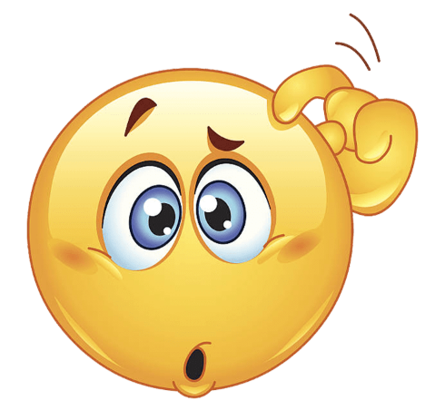
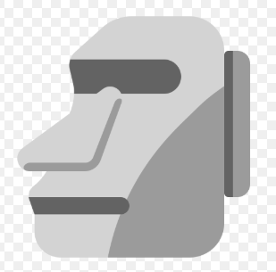
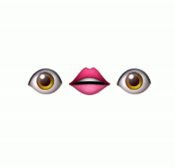
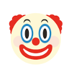

Meaning of Strange Emojis
In the world of digital communication, emojis have become an essential tool for expressing emotions, reactions, and even entire messages. But not all emojis are straightforward. Some can be strange, confusing, or even misunderstood depending on context or culture.
Let’s take a deep dive into some of the strangest emojis and uncover their hidden meanings, so you don’t misinterpret them the next time someone drops them into a message!
😕 Confused Face: While it might look like someone thinking or puzzled, this emoji is commonly used to express discomfort, awkwardness, or mild disappointment. It doesn’t mean you’re confused in the traditional sense—it’s more about expressing unease.
🗿 Moyai: This emoji represents the Moai statues of Easter Island, but in memes and chat culture, it's often used to convey stoicism or indifference. Some even use it ironically to represent deep thoughts or detachment from a situation.

💨 Dashing Away: This isn’t just a puff of air! It’s commonly used to represent someone running quickly, sneaking away from a situation, or even—yes—farting in meme language.
👁️👄👁️ Eye-Mouth-Eye: Though not technically one emoji, this combo is used together to show shock, silence, or being speechless. It blew up in internet culture as a meme for awkward moments or serious disbelief.
Another strange one is 🧍 Person Standing. While meant to represent someone standing still, it has evolved to be used in awkward situations, like standing alone, feeling left out, or just existing aimlessly in a scenario.
Then there’s 🤡 Clown Face—used sarcastically to show you feel like a fool or to point out clownish behavior in others. It’s a go-to emoji when someone does something ridiculous or cringeworthy.
And let’s not forget 🙃 Upside-Down Face. At first glance, it seems playful, but it often implies sarcasm, passive-aggressiveness, or a sense of “I’m pretending everything is okay, but it’s not.”
Understanding these emojis helps avoid miscommunication and adds nuance to your digital conversations. Strange emojis aren’t just random—they often reflect deeper tones, moods, and internet subcultures that evolve constantly.
Next time you see one of these quirky icons in your chat, you’ll know what it truly means—and maybe even surprise your friends with your emoji wisdom!